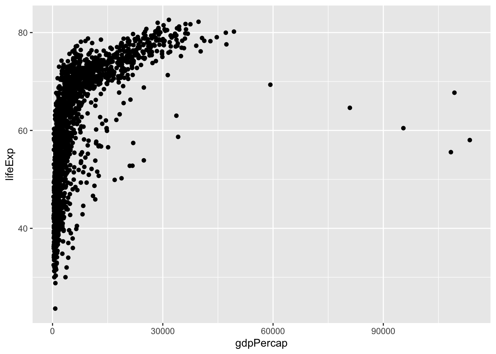

Chapter 9 Visualisasi Data
Visualisasi merupakan salah satu hal yang paling menarik dalam analisis data sekunder karena dapat memberi informasi yang padat namun mewakili apa yang ingin disampaikan penneliti. Salah satu rekomendasi paling baik untuk visualisasi data adalah R dengan paket ggplot2 dan lattice. ggplot2 merupakan implementasasi dari grammar of graphics dan emmungkinkan peneliti utnuk melakukan visualisasi data dengan pentahapan satu layer demi layer hingga menghasilkan visualisasi data yang elegan.
Salah satu paket yang paling banyak digunakan untuk visualisasi data dengan R adalah ggplot2 yang dibuat oleh Hadley Wickham. Pembahasan dan contoh mengenai paket ini dapat ditemukan dalam laman berikut ini: . Laman ini memuat bagaimana sebuah visualisasi dihasilkan melalui kode R.
###Pendahuluan
Memahami data merupakan salah satu kemampuan yang dibutuhkan untuk memahami statistika secara keseluruhan. Salah satu keunggulan yang dimiliki R adalah kemampuan untuk membuat grafik dan visualisasi data. R menyediakan visualisasi data dengan tingkat resolusi yang tinggi. Bab ini akan memberi penjelasan mengenai bentuk visualisasi data yang perlu digunakan dalam penelitian sosial. Selain itu, bab ini memberi contoh dan kode bagaiaman membuat plot data yang sedang diuji untuk memberi gambaran yang lebih menyeluruh mengenai data yang sedang diperiksa.
Bab ini membahas dan menjelaskan berbagai macam plot atau visualisasi data yang diperlukan dalam statistika, mulai dari bar plot, histogram, kernel density, box plot, violin plot, pie chart, scatter plot dan pembuatan peta. Pada masing-masing bentuk plot, akan dijelaskan pengertian plot, fungsi plot dan bagaimana mengimplementasikannya menggunakan R, serta penjelasan mengenai hasil plot yang diperoleh.
Dalam pemrograman R, ada beberapa package yang diperlukan untuk melakukan plot data dan visualisasi data dengan elegan adalah ggplot2, yang bisa digunakan dengan menuliskan kode berikut ini.
## # A tibble: 1,704 x 6
## country continent year lifeExp pop gdpPercap
## <fct> <fct> <int> <dbl> <int> <dbl>
## 1 Afghanistan Asia 1952 28.8 8425333 779.
## 2 Afghanistan Asia 1957 30.3 9240934 821.
## 3 Afghanistan Asia 1962 32.0 10267083 853.
## 4 Afghanistan Asia 1967 34.0 11537966 836.
## 5 Afghanistan Asia 1972 36.1 13079460 740.
## 6 Afghanistan Asia 1977 38.4 14880372 786.
## 7 Afghanistan Asia 1982 39.9 12881816 978.
## 8 Afghanistan Asia 1987 40.8 13867957 852.
## 9 Afghanistan Asia 1992 41.7 16317921 649.
## 10 Afghanistan Asia 1997 41.8 22227415 635.
## # … with 1,694 more rowsKatakanlah kita ingin merencanakan Harapan Hidup terhadap PDB per kapita untuk semua tahun negara dalam data. Kami akan melakukan ini dengan membuat objek yang memiliki beberapa informasi yang diperlukan di dalamnya, dan membangunnya dari sana. Pertama, kita harus memberi tahu ggplot()fungsi apa data yang kita gunakan.
Pada titik ini ggplot tahu data kami, tetapi tidak tahu apa pemetaannya . Artinya, Anda tidak perlu secara eksplisit menyebutkan argumen yang Anda berikan ke fungsi, selama Anda memberikannya dalam urutan yang diharapkan, yaitu, urutan yang tercantum di halaman bantuan untuk fungsi tersebut.Kode ini akan tetap berfungsi jika kami menghapusdan.Dalam buku ini, saya menyebutkan semua argumen untuk kejelasan.kita perlu memberi tahu variabel mana dalam data yang harus diwakili oleh elemen visual mana dalam plot. Kami juga tidak tahu plot seperti apa yang kami inginkan. Di ggplot, pemetaan ditentukan menggunakan fungsi. Seperti ini:data = mapping =aes()
